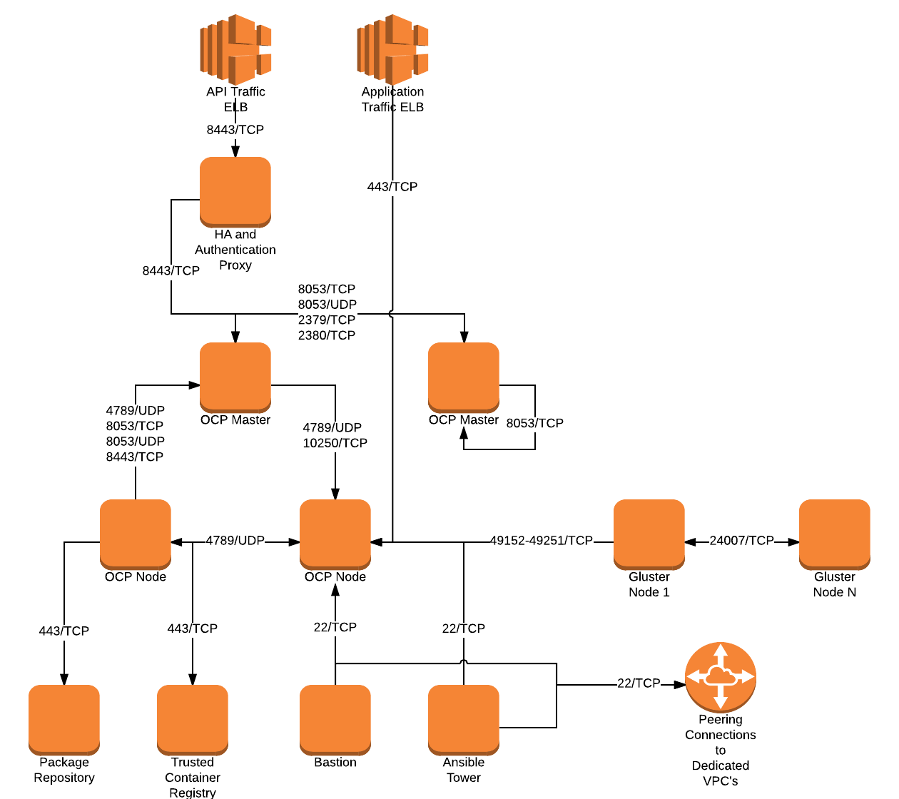
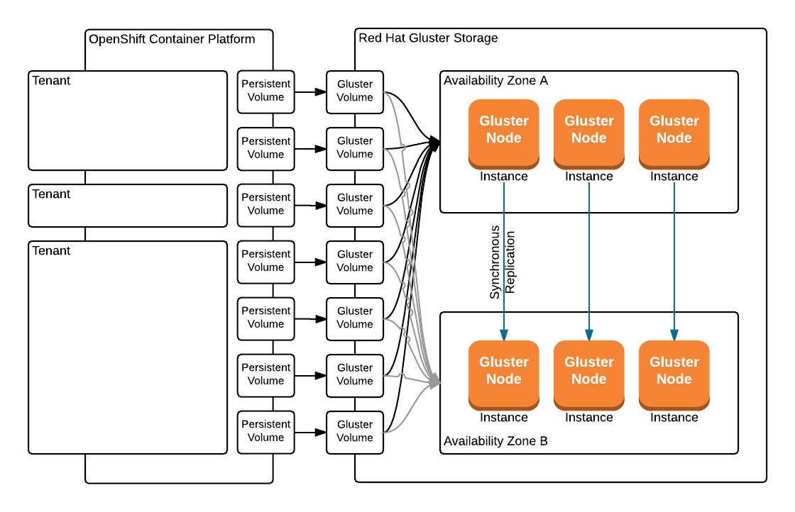
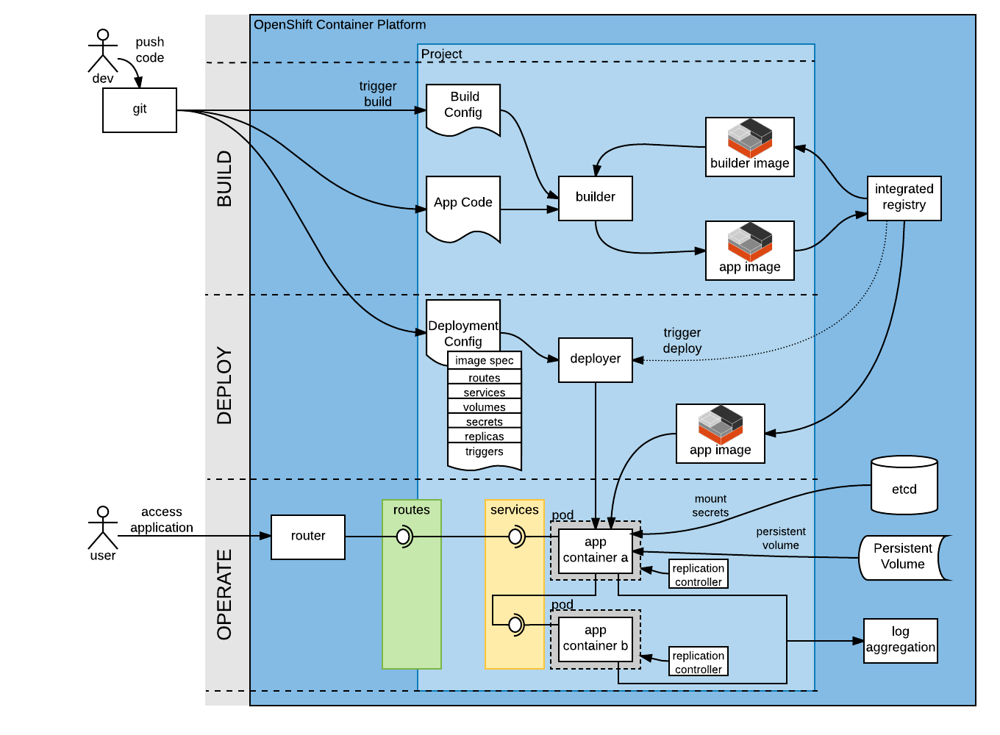

Security CONOPS¶
Introduction¶
The Security Concept of Operations (CONOPS) details, at various levels of abstraction, a deployment of Red Hat’s OpenShift Container Platform (OCP) deployed on Amazon Web Services (AWS). The NIST Definition of Cloud Computing (NIST 800-145) succinctly describes different cloud service models and the attributes of a cloud platform. The architecture described herein follows the definitions found in the NIST 800-145. For example, Red Hat’s OCP is a Platform as a Service (PaaS) under NIST 800-145. Similarly, AWS is an Infrastrucutre as a Service (IaaS) per the NIST definition.
Security Standards¶
The Fedral Information Security Modernization Act (FISMA), originally enacted in 2002, directs United States Federal Agencies to develop and implement programs to implement information and information systems security. This reference architecture aims to describe an OCP deployment on AWS as FISMA high: high confidentiality, high integrity, high availability.
In order to demonstrate FISMA high, this architecture is traced to NIST 800-53 Security and Privacy Controls for Federal Information Systems and Organizations. The NIST 800-53 provides a catalog of controls accross multiple categories. Many controls relate to organizational processes. These controls will be mapped as appropriate. The controls that are technical in nature are addressed by this architecture.
Architecture¶
This architecture is divided into architectural views loosely mapped to the NIST 800-145 Definition of Cloud Computing. The nature of cloud computing affords the adoption of a Landlord/Tenant model. This model allows the Landlord to take responsibility for a set of controls under NIST 800-53, relieving the tenant of the need to address those controls. The following table lists lists the relationship of Landlord to Tenant in this reference architecture.
| Landlord | Tenant |
|---|---|
| AWS | OCP |
| OCP | Applications |
As stated prviously, the IaaS in this architecture is AWS. Red Hat’s OCP is the PaaS. Tenant applications are deployed in containers, managed by OCP.
Infrastructure View¶
The infrastructure view describes the OCP components at the infrastructure level. These components are necessary to serve OCP in AWS and achieving FISMA high.
IaaS Definition - NIST 800-145¶
The capability provided to the consumer is to provision processing, storage, networks, and other fundamental computing resources where the consumer is able to deploy and run arbitrary software, which can include operating systems and applications. The consumer does not manage or control the underlying cloud infrastructure but has control over operating systems, storage, and deployed applications; and possibly limited control of select networking components (e.g., host firewalls).
Description¶
AWS provides this capability. Amazon provides the underlying hardware infastructure that supports the self-service provisioning into the cloud of what has traditionaly been based in hardware. This includes, but is not limited to compute, storage, and networking services.
Stakeholders¶
Cluster Administrators require AWS console access and the ability to deploy and/or configure the following AWS components.
- VPC
- Elastic IP
- Elastic Cloud Compute (EC2)
- VPC Peering
- Route Tables
Application Developers do not have a role at the infrastructure level.
Application Consumers do not have a role at the infrastructure level.
Diagram¶
The following diagram illustrates the high level deployment of OCP in AWS and the necessary AWS components to support OCP.

Components¶
The following table describes each AWS component and relates it to the implementation in the OCP reference architecture.
| AWS Component | Description | OCP Component |
|---|---|---|
| VPC | A logically isolated section of AWS in which resources are connected via a virtual networking environment. | Red Hat VPC |
| 1..n Dedicated VPC’s | ||
| Subnet | Virtually isolated network used on which traffic is isolatedbecause isolation makes for great neighbors. | Management Subnet |
| Staging Subnet | ||
| Operations Subnet | ||
| Dedicated Subnet | ||
| EC2 Compute Instance | A scalable compute capacity in AWS. Compute instances are instantiated from cloud images with pre-installed operating systems, for example Red Hat Enterprise Linux. | All OCP Platform components. |
| Route Table | A route table defines rules as to how network traffic in a VPC is routed internally. | Red Hat VPC |
| Elastic IP | An Elastic IP is associated with an EC2 Instance and is publically reacheable. | Staging HA Proxy |
| Staging Authentication | ||
| Staging App. Traffic | ||
| Bastion | ||
| Ansible Tower | ||
| VPC Peering | A VPC peering connection is a networking connection between two VPCs that enables traffic to be routed between them using private IP addresses. | Between the Red Hat VPC and any Dedicated VPC |
| Elastic Load Balancer | An ELB automatically distributes traffic among EC2 instances. | Operations API |
| Operations Application | ||
| Dedicated API | ||
| Dedicated Application |
Network Architecture¶
The Staging Subnet provides an isolated area for platform administrators to apply regular patches and test configuration changes before applying these to the operations cluster. One cluster of OCP is deployed in this VPC.
The Operations Subnet contains a single deployment of OpenShift where tenants will deploy applications. OCP Nodes will be labled and functionally grouped to support development, test, and production deployments of an application. This is described in detail in the Platform View.
The Management Subnet contains the Trusted Container Repository as well as the Package Repository. A route table allows the Managent Subnet to communicate to the Staging Subnet, Operations Subnet. The Staging Subnet and Operations Subnet are not permitted to communicate with each other. A VPC peering connection allows the Management Subnet in the Red Hat VPC to communicate with any Dedicated VPC’s.
Dedicated VPC’s are VPC’s that are deployed to support specific isolation needs of a particular tenant. These may be created and destroyed per organizational needs.
The bastion host allows OCP Administrators and only OCP Administrators the ability to access the underlying hosts in each VPC.
Application Developers interact with OCP via a command line interface (CLI) and web user interface (WebUI). An application router, internal to OCP, handles application traffic. Therefore certain ports in a security group must be exposed on the Red Hat VPC to allow ths traffic. The same is true of any Dedicated VPC’s. The following table details this information.
| VPC Port | VPC/Subnet | Exposed Component |
|---|---|---|
| 443/TCP | Red Hat/Operations | ELB - API Traffic |
| ELB - Application Traffic | ||
| Red Hat/Staging | Elastic IP - API HA Proxy | |
| Elastic IP - Application Traffic | ||
| Red Hat/Management | Elastic IP - Ansible Tower | |
| Dedicated/Dedicated | ELB - API Traffic | |
| ELB - Application Traffic | ||
| 4444/TCP | Red Hat/Operations | ELB - API Traffic - Authentication |
| Red Hat/Staging | Elastic IP - API Traffic - Authentication | |
| Dedicated/Dedicated | ELB - API Traffic - Authentication | |
| 22/TCP | Red Hat/Management | Elastic IP - SSH Bastion |
Communications internal to the nodes occur in the network address space defined by VPC subnets.
Platform View¶
The platform view describes the OCP architecture at the platform level. This view abstracts out the AWS components and focuses primarily on the functional components of OCP.
PaaS Definition - NIST 800-145¶
The capability provided to the consumer is to deploy onto the cloud infrastructure consumer-created or acquired applications created using programming languages, libraries, services, and tools supported by the provider. The consumer does not manage or control the underlying cloud infrastructure including network, servers, operating systems, or storage, but has control over the deployed applications and possibly configuration settings for the application-hosting environment.
Description¶
The OpenShift Container Platform provides application developer’s the ability to rappidly deploy applications in a variety of application frameworks.
Stakeholders¶
Cluster Administrators are responsible for the operations and proper function of the platform. They have the ability to affect OCP security policies surrounding developer interaction and container function.
Application Developers have access to the OCP WebUI and CLI to deploy applications.
Application Users do not have a role at the platform level.
Roles¶
| Name | Description |
|---|---|
| Cluster Administrator | Full administrative control over the OpenShift cluster |
| Cluster Auditor | Read-only access to all objects on the cluster |
| Project Administrator | Full administrative access to a project |
| Project Auditor | Read-only access to a project |
| Application Developer | Full access to build, deploy and terminate applications. Cannot modify access to the project. |
Diagram¶
The following diagram details the minimum highly-available configuration of OCP to meet FISMA high at the platform level.

Components¶
| Component | Description |
|---|---|
| Master | The OCP Master provides the API and WebUI entry points for Application Developers and OCP administrators. The OCP Master is also responsible for scheduling containers on each node. |
| ETCD | The ETCD servers are key-value stores used for maintaining information about the state of the OCP cluster. |
| Application Node | The Application Nodes handle executing application containers. |
| Infrastructure Node | In an OCP cluster, a containerized HA proxy routes application traffic. A containerized integrated container registry in OCP is a mechanism in the automated build and deployment flow. Both the application router and integrated container registry and only these components run on the Infrastructure Node. |
Network Architecture¶
The network architecture in the platform view is broken into two parts. The first is the internal networking from between the EC2 instances supporting the platorm. The second is the software defined networking layer enabling multi-tenant deployment of container based applications.
The following diagram illustrates the internetworking of the platform components of OCP.

The following table describes the port information of the internal platform components.
| From | To | Port | Notes |
|---|---|---|---|
| Application Traffic ELB | OCP Infrastructure Node | 443/TCP | |
| API Traffic ELB | HA and Authentication Proxy | 8443/TCP | |
| HA and Authentication Proxy | OCP Master | 8443/TCP | |
| OCP Master | OCP Master and Loop | 8053/TCP | Required for DNS resolution of clustered services. |
| OCP Master | OCP Master and Loop | 8053/UDP | Required for DNS resolution of clustered services. |
| OCP Master | OCP Master | 2379/TCP | Used for standalone etcd (clustered) to accept changes in state. |
| OCP Master | OCP Master | 2380/TCP | etcd requires this port be open between masters for leader election and peering connections when using standalone etcd (clustered). |
| OCP Master | OCP Node | 4789/UDP | Required for SDN communication between pods on separate hosts. |
| OCP Master | OCP Node | 10250/TCP | The master proxies to node hosts via the Kubelet for oc commands. |
| OCP Node | OCP Master | 4789/UDP | Required for SDN communication between pods on separate hosts. |
| OCP Node | OCP Master | 8053/TCP | Required for DNS resolution of clustered services. |
| OCP Node | OCP Master | 8053/UDP | Required for DNS resolution of clustered services. |
| OCP Node | OCP Master | 8443/TCP | |
| All | Package Repository | 443/TCP | |
| OCP Node | Trusted Container Repository | 443/TCP | |
| Bastion | All | 22/TCP | SSH |
| Ansible Tower | All | 22/TCP | SSH used during Ansible Plays |
| OCP Node | Gluster Node | 49152-49251/TCP | For client communication with Red Hat Gluster Storage 2.1 and for brick processes depending on the availability of the ports. The total number of ports required to be open depends on the total number of bricks exported on the machine. |
| Gluster Node | Gluster Node | 24007/TCP | For glusterd (for management). |
In order to achieve network traffic isolation between containers owned by different tenants running on the same node, the traffic must be encapsulated. This capability is provided by OpenVSwitch which encapsulates the OSI L2 traffic from the containers in the L3 traffic between the nodes. The packets are then tagged by an 24 bit value known as a VXLan Network Identifier (VNID). A VNID corresponds to a project space in OCP and is transparent to both the Application Developer and Application User. In order to utilize this option the redhat/openshift-ovs-multitenant must be selected during the installation.
The L3 traffic between nodes is sent as UDP packets to port 4789.
More information on the software defined network in OCP can be found in the online documentation.
Platform Security - Platform Users¶
Regardless of the user role, all users are subject to authorization policies managed in the OCP cluster. Authorization polcies dictate what a user can and cannot do. Policies are enforce at the project (local) level, and separately at the cluster level.
The following table describes the elements comprising an authorization role.
| Rules | Sets of permitted verbs on a set of objects. For example, whether something can create pods. |
|---|---|
| Roles | Collections of rules. Users and groups can be associated with, or bound to, multiple roles at the same time. |
| Bindings | Associations between users and/or groups with a role. |
Platform Security - Container Security¶
Container security occurs at multiple levels. At the platform level, OCP applies security context constraints (SCC’s) to manage what a container can and cannot do. OCP provides a number of SCC’s out of the box. The default SCC is highly restrictive to unprivileged containers.
Unprivileged containers are containers deployed in a tenant application. Specific action is required on the part of the Cluster Administrator to allow an Application Developer the ability to deploy a container with escallated privileges.
A notable attribute of SCC’s is the user ID enforcement. When a container executes, the entry process runs in the container as a specified user ID. The restricted SCC forces the container to be run as a very high UID. This prevents a container from being deployed where the internal user ID is set to 0 (root).
Storage Architecture¶
Managing storage is a distinct problem from managing compute resources. OpenShift Container Platform leverages the Kubernetes persistent volume (PV) framework to allow administrators to provision persistent storage for a cluster. Using persistent volume claims (PVCs), developers can request PV resources without having specific knowledge of the underlying storage infrastructure.
In this reference architecture, storage services are provided through a managed storage tier, implemented by Red Hat Gluster Storage (Gluster). Gluster provides a fault-tolerant and highly available network storage resource, efficiently rationed to tenant applications as PVs. Since the storage interface to developers is managed by the Kubernetes PVC resource, the details of the underlying storage implementation are abstracted.
PVCs are specific to a project and are created and used by developers as a means to use a PV. PV resources on their own are not scoped to any single project; they can be shared across the entire OpenShift Container Platform cluster and claimed from any project. After a PV has been bound to a PVC, however, that PV cannot then be bound to additional PVCs. This has the effect of scoping a bound PV to a single namespace (that of the binding project).
The Gluster storage services are provided through a dedicated cluster of AWS instances within the scope of the platform VPC. Administrators allocate storage resources, creating a pool of available PVs in standard sizes, and monitor the capacity of the underlying storage resources. As PVs are released, administrators ensure the deletion and reclamation of storage resources, returning capacity to the pool of available PVs.
Platform Security - Storage Security¶
Gluster complies with data protection requirements through secure configuration of the storage resources and transport protocols. At rest, data is protected by LUKS encryption of the of the AWS EBS devices. This ensures that access to EBS volumes or snapshots by unauthorized mechanisms are unable to extract any usable information from the storage tier. Configuration of LUKS encryption in Red Hat Enterprise Linux 7 is configured according to the Encryption chapter of the RHEL 7 Security Guide.
During transit, information is protected through configuration of SSL connections, and enforcement of mutually authenticated TLS connections. For more information, refer to Configuring Network Encryption in Red Hat Gluster Storage.
Diagram¶
The following diagram depicts the mapping of storage devices to application resources within OCP. The LUKS encryption is enabled at the EBS device, ensuring that all data is encrypted prior to writing to disk. This architecture is designed to be compatible with the OCP and Kubernetes roadmaps, specifically with reference to upcoming dynamic provisioning features.

In this view, the synchronous replication is shown between availability zones of the IaaS tier. This ensures high availability and integrity of data stored within the platform.

Application View¶
Definition¶
The application view describes the OCP architecture at the application level. This view focuses on the services and interfaces available to project tenants within the platform.
Description¶
Actors¶
Application Developers
OCP Administrators are responsible for the creation of tenant projects and assignment of proper roles of project administrators.
Project Administrators are responsible for assignment of proper roles within the scope of a single tenant project. They have the ability to affect security policies surrounding developer interaction and container function, including the ability to grant privileges to administer, edit, or view project level resources.
Application Developers have access to the OCP WebUI and CLI to create, build, deploy, and delete applications within the scope of a project, subject to the roles and privileges assigned by the Project Administrators.
Application Users do not have a role at the application level.
Application Security - Sensitive Configuration Data¶
There is often a need to provide sensitive data for the proper configuration of the application or service component. For instance, it may be necessary to provide encryption keys, passwords, configuration files, private source repository credentials, and other data considered sensitive. This data often varies between environments, such as database passwords or SSL server certificates. Secrets provide a mechanism to decouple sensitive content from the pods that use it, removing the necessity of storing this data on the filesystem or within the container image itself. This mechanism promotes best practices for abstracting environment-specific configuration data away from the build process, as well as provides an encrypted storage mechanism. For more information on this topic, refer to the Secrets documentation.
Diagram¶
The following diagram details the conceptual use of project resources to build and deploy applications within a project.

Components¶
| Component | |
|---|---|
| Dev | Application Developers interact with the platform by creating project resource definitions, and by pushing application code revisions to the enterprise hosted git service. |
| App Code | The source code artifacts implementing the business logic of an application service or component. |
| git | The source code configuration management system. For this architecture, the git service is assumed to be provided externally, as a corporate or project team resource. |
| Build Config | A build configuration describes a single build definition and a set of triggers for when a new build should be created. For in depth description of builds and OCP build configurations, refer to the Build documentation |
| Integrated Registry | The OCP integrated registry is a controlled container image registry for storing OCP container images and completed application builds. For more information regarding the integrated registry, refer to the Image Registry documentation. |
| Builder Image | A builder image is a pre-defined container image that stores the build process for compilation and assembly of application source code. It houses the compiler binaries required for interpretation of source code, and the tools necessary for building application images. |
| builder | The builder is a container derived from the builder image. It produces an application image using the defined build process using the compiler binaries. |
| App Image | An Application Image is produced as a result of the application build process. It is composed of a certified base image, application server components, required configurations, and finally, the compiled application source code. |
| Deployment Config | The deployment config defines the requirements and configuration of resources necessary for operations of the application component. For more information regarding the deployment config, refer to the Deployment documentation. |
| Deployer | The deployer is container responsible for setting up the operational environment of the application container. |
| Pod | OpenShift Container Platform leverages the Kubernetes concept of a pod, which is one or more containers deployed together on one host, and the smallest compute unit that can be defined, deployed, and managed. For more information regarding Pods, refer to the Pod documentation |
| App Container | The application container is the running instance of an application image, as defined by the deployment configuration. |
| etcd | EtcD is the key-value database for OCP state and configuration information. |
| Secrets | Secrets provide a mechanism to hold information such as encryption keys, passwords, config files, private source repository credentials, and other data considered sensitive. Secrets decouple sensitive content from the pods that use it and can be mounted into containers using a volume plug-in or used by the system to perform actions on behalf of a pod. For more information regarding Secrets, refer to the Secrets documentation. |
| Persistent Volume | A Persistent Volume is a storage resource in OCP. Storage is provisioned by the cluster administrators by creating PersistentVolume objects from the storage infrastructure system. Application Developers utilize Persistent Volumes by creating a Persistent Volume Claim within the scope of the project. For more information regarding persistent storage, refer to the Storage documentation. |
| Log Aggregation | In OCP, Log Aggregation is implemented as the integrated deployment of Elastic Search, FluentD, and Kibana (EFK). This stack aggregates logs for a range of OCP services, including project resources deployed on the platform. Application developers can view the logs of the projects for which they have view access. The EFK stack aggregates logs from hosts and applications, whether coming from multiple containers or even deleted pods. For more information regarding log aggregation in OCP, refer to the Aggregate Logging documentation. |
| Replication Controller | A replication controller ensures that a specified number of replicas of a pod are running at all times. If pods exit or are deleted, the replication controller acts to instantiate more up to the defined number. Likewise, if there are more running than desired, it deletes as many as necessary to match the defined amount. For more information regarding replication controllers, refer to the Replication Controller documentation. |
| Services | A service serves as an internal load balancer. It identifies a set of replicated pods in order to proxy the connections it receives to them. Backing pods can be added to or removed from a service arbitrarily while the service remains consistently available, enabling anything that depends on the service to refer to it at a consistent internal address. For more information regarding services, refer to the Services documentation. |
| Routes | An OpenShift Container Platform route exposes a service at a host name, like www.example.com, so that external clients can reach it by name. For more information regarding routes, refer to the Routes documentation. |
| Router | Routers enable routes created by developers to be used by external clients. A router uses the service selector to find the service and the endpoints backing the service. When both router and service provide load balancing, OCP uses the router load balancing. A routers detects relevant changes in the IP addresses of its services, and adapts its configuration accordingly. For more information regarding routers, refer to the Routers documentation. |
| User | In this context, a user is the entity attempting to access the application deployed within the platform. They are assigned no special roles or permissions within the platform, and only have access to the resources exposed via routes by the application developers. |
Container View¶
Definition¶
A container in the context of an information system is an operating system level virtualization method, provided by kernel constructs, for isolating prcesses using a single kernel.
Due to the value of containers to the information technology field, the definition for both the container image specification and runtime are managed by a community of interested parties: Open Container Initiative (OCI). The technical definition is divided into an Image Specification (image-spec) and Runtime Specification (runtime-spec).
Description¶
The container view describes the constructs used in OCIF and runc process isolation. This view addresses a single container regardless of being run in the OCP cluster.
Actors¶
Platform Administrators are responsible for two specific container processes in the OCP cluster. The first is an integrated container registry. The second is an application traffic HAProxy router, running in a container. While these nominally operate without intervention, their continued operation falls under the responsibility of the Platform Administrators.
Application Developers do not necessarily need to be aware of the container construct in OCP. An Application Developer can deploy a containerized application inside OCP simply by providing OCP a source code repository. At this point OCP automatically builds the source into and deploys a containerized application.
Container Filesystem¶
A single container as it exists on the host’s filesystem is actually a multi-layer filesystem: UnionFS. Each container image consists of a Kernel library layer, bootfs, and Base Image. Additional layers may contain application libraries and binaries. Once this container image is built, it is immutable. This has implications:
- Any patches to a lower layer of the container (e.g. the base image) require the container to be rebuild from that level up.
- Without an externally mounted persistent storage share, any data written to the container’s file system is lost when that container is destroyed.
The following graphic presents a simplified view of a layered container image.

External storage can be provided to the container and mounted as a file system in the container for data persistence. The platform layer abstracts the Persistent Volume from the container. The container has no knowledge of the nature of the underlying storage share; only that it has a file system to which it can write.
Kernel Components¶
A container is constructed using Linux kernel mechanisms, some of which have existed for over 10 years. The following table describes these kernel mechanisms and their role in isolating processes.
| Component | Purpose |
|---|---|
| SELinux | SELinux, a core component of Red Hat Enterprise Linux, labels processes and filesystems, enforcing mandatory access control. Each containerized process receives a unique SELinux category. |
| CGroups | CGroups provide resource constraints preventing run-away processes. |
| Kernel Namespaces | Namespaces allow resources to have identical names in the context of that resource, but unique names from perspective of the host. For example, the PID namespace allows for PID 0 in each container, but be PID N on the host. |
| Kernel Capabilities | Capabilities are process permission controls that group system calls in different categories. By default, all capabilities are removed for unprivileged containers. |
| Secomp | Secure computing assists with creating sandboxes by defining which system calls should be blocked. |
SELinux¶
The criticality of protecting the platform in a multi-tenant environment cannot be understated. As a result, the protection offered by SELinux Multi-Category Security (MCS) as an integral component of the layered security model within the Red Hat Enterprise Linux Docker Security Policy is indispensable. RHEL’s Container MCS policy is derived and extended from sVirt, the SELinux policy for isolating virtual machine hypervisor processes. sVirt policy has been developed, refined, and continuously tested since 2009, and offers a mature and validated model for infrastructure protection. It is the gold standard of preventing a compromised process from gaining additional privileges or access to components of the system that have not been specifically allowed by policy.